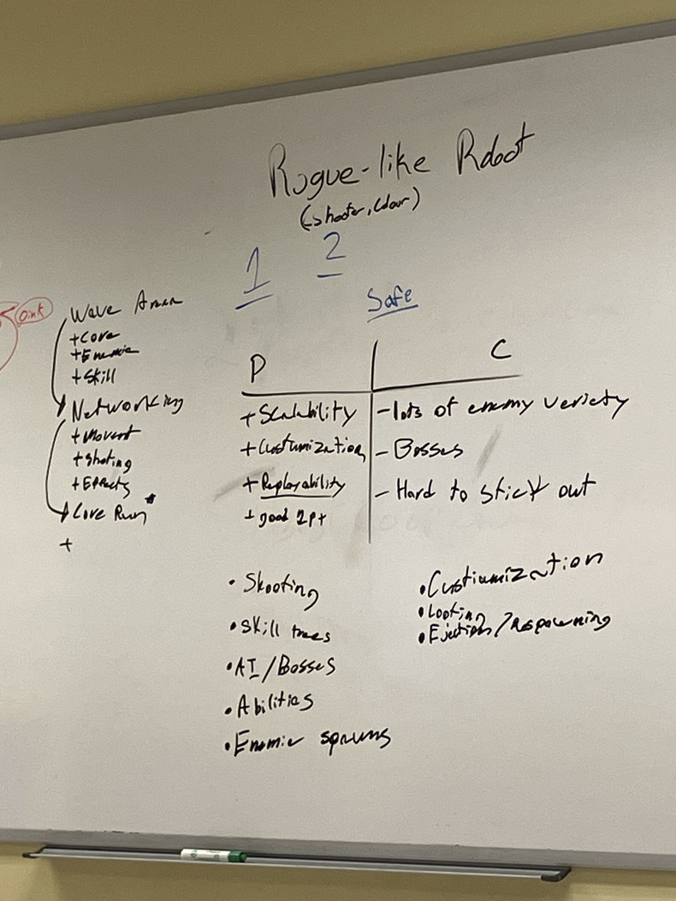
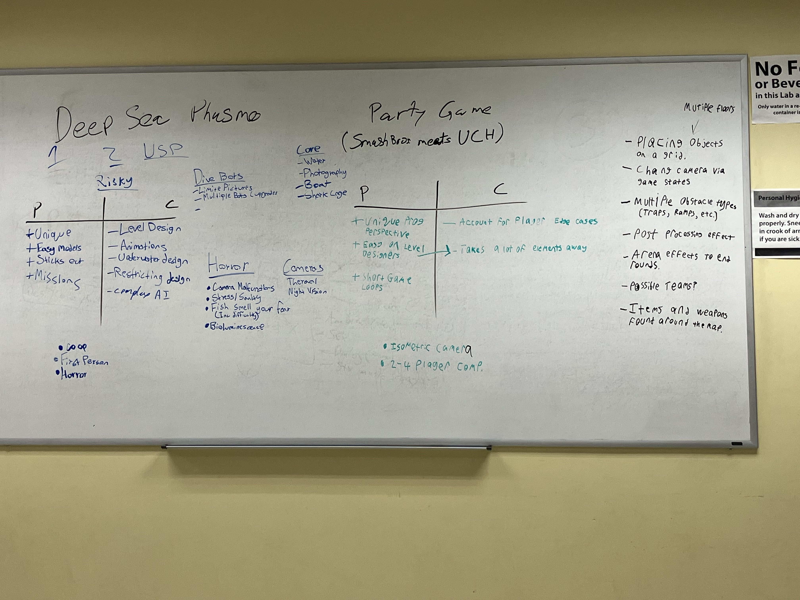

"Project: Abyss" Blog
Week 4
Fri, Sept 29, 2023
Pitch Presentation & Gameplan
This was a fairly stressful week, as we had to get our pitch presentation ready for Wednesday.
We were well prepared, so it wasn't too bad, but it was still a bit stressful as we aren't too used to presenting.
We had to make a slideshow, and a video, and the prototype needed to be playable in front of the audience.
There was luckily no technical issues, and the presentation including the prototype went smoothly.
After we finished the presentation, we had a meeting on friday to discuss our gameplan for the next few months.
Firstly, we decided to use a new git repository, as the old one was a bit messy.
As I'm the build engineer, I was tasked with setting up the new repository.
I also went over how to use Github for the artists to make sure they were comfortable with it, and there were no issues.
Since I pitched the game idea, I've taken initiative with a somewhat leadership role. I've been making sure everyone is on the same page in the project, and I've been making sure everyone is doing okay,
and I've been trying to keep the team morale up.
After we pivoted games, team morale was a bit down, but after the presentation
and a few meetings, everything has started to go extremely well. I'm very happy with how the team is working together,
and I'm excited to see what we can do.
Here's the slideshow that I mostly completed on my own that we used for the presentation.
Here's our companies identity document.
Finally, here's a video of the prototype that we had a week to make.
It turned out really well!
This is a gameplay loop that I created to show off what we plan on creating; the video goes over a few of the core mechanics.
Until Next Week,
Austin M
.png)
Week 3
Fri, Sept 22, 2023
The Game Pivot
This week had an interesting turn of events. On monday, we handed in our One Pagers for each of our game pitches,
and we were given the go ahead on our robot-roguelike later that night by the professor.
However, he also said that he really liked our 2nd game pitch idea, and gave us the
option to switch to that one if we wanted to.
This was an extremely difficult choice, as we'd be doing this project for the next 8 months
and we had already started on the robot-roguelike prototype. After an emergency team meeting,
and lots of discussion, we decided to switch to the 2nd game idea, "Project: Abyss"
This game idea was actually my original idea, and I was very excited to work on it.
I was also very excited to work on the robot-roguelike, but I think this was the right choice.
Here's the 3 One Pagers.
We then had to fully pivot to this game. We had to restart the prototype from scratch,
and make sure everyone was on the same page. I took a bit of lead and decided to make a game design document
to make sure everyone was on the same page. People were definitely a bit stressed out from the switch,
but I think we're all excited to work on this game. After some working on it over the week,
we got almost all of the prototype done by sunday night.
Here's the documents we worked on.
I'm extremely happy with all of my team members, and I'm excited and confident in our ability to make this game.
Signing off,
Austin M
Week 2
Fri, Sept 15, 2023
The Prototype Grind
This week started off eventful as we had to begin to narrow down our game choices. By friday,
we had decided on a game idea. The voting method we used was elimination voting, where we would vote for
our top 3 games, and then the top 3 would be discussed in depth.
We would then vote again, and the game with the most votes would be the one we would go with.
We've settled on a captivating concept for our game: a robot roguelike shooter with upgradable robot components and intense enemy encounters.
The deadline is approaching swiftly, as we aim to have a compelling pitch and a playable prototype ready by Monday, the 24th. With our game concept locked in,
it's full steam ahead as we dive into prototype development and prepare our pitch. Additionally, we've designated roles within the project, and I've taken on the role of build engineer.
This means overseeing git merges and ensuring a functional build is available for our professor to assess every week. It's a weighty responsibility, but I'm ready to take it on.
Here are some pictures of the white board we used for the voting and brainstorming.


So what's next?
Our Jira was setup, and we will be using that to keep track of our tasks.
We will be using Unreal Engine for our prototype, and we will be using a temporary github to get a head start on some of the programming.
We also need to remember that UML diagrams and design docs need to be done as well.
Signing off,
Austin M
Week 1
Fri, Sept 8th, 2023
The Project Begins
This blog will be semi casual, mainly used as a way to document progress throughout capstone, and keep myself organized.
I'll be updating it every week on Friday, with the occasional bi weekly update if stuff is busy.
This week we formed our teams, and had our first meeting.
I was chosen as one of the two "team captains" who had to pick who would be on my team, dodgeball style.
Needless to say, it was nerve wracking, but I was happy to have a team of people I know and trust,
as well as a few new faces I was looking forward to work with.
Our first meeting was mainly introductions, and getting to know each other.
We also discussed our project, and what we wanted to do, and were tasked to bring games to the meeting
that were similar to what we wanted to make. I brought Subnautica because I adore deep sea games,
and I think it would be a fun challenge to make something similar.
Here is a write up of a game pitch I created for the Subnautica inspired game.
For next week, we will be setting up our Jira board, and getting our project proposal ready.
I'm looking forward to getting started on this project, and I'm excited to see what we can do!
Signing off,
Austin M
Contact Me
If you're interested in working together or have any questions, contact me at these avenues!